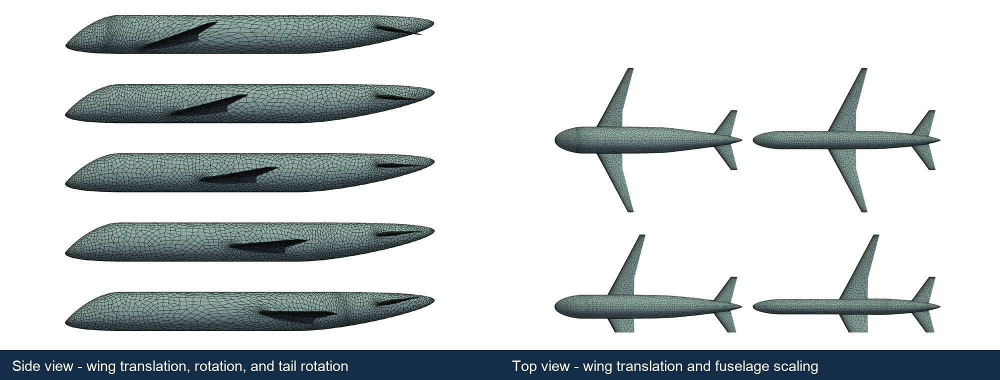

Methods
Differentiable surface and volume mesh deformation
- Context
- Aircraft shape optimization requires analysis meshes to follow changes in component shape and position.
- Gap
- Moving component intersections can distort conforming surface meshes, while remeshing and intersection reconstruction complicate design derivatives.
- Research goal
- Maintain mesh quality and differentiability through large component motions, supporting aerodynamic optimization of full aircraft configurations.
Selected studies
ReferencesUpdating aircraft meshes through large, coupled geometry changes
Explicit component parameterizations and implicit signed-distance fields project mesh nodes onto a smooth aircraft surface without recomputing intersection curves. Large-deformation tests assess mesh quality, and a fuel-burn optimization with a 3D panel code demonstrates simultaneous changes in planform, twist, camber, and component placement.
Primary paper
Marius L. Ruh, John T. Hwang. Surface Mesh Deformation for Large-Scale Multidisciplinary Design Optimization of Aircraft Concepts. AIAA AVIATION 2026 Forum, AIAA 2026-4569, 2026.
PDF
@inproceedings{ruh2026surface,
author = {Marius L. Ruh and John T. Hwang},
title = {Surface Mesh Deformation for Large-Scale Multidisciplinary Design Optimization of Aircraft Concepts},
booktitle = {AIAA AVIATION 2026 Forum, AIAA 2026-4569},
year = {2026},
note = {Metadata verification: Crossref unavailable: HTTPError}
}

References
- Marius L. Ruh, John T. Hwang. Differentiable Surface Mesh Deformation for Non-Conformal, Independently Parameterized Components with Large Shape Changes. AIAA AVIATION FORUM AND ASCEND 2025, 2025.DOIPDF
@inproceedings{ruh2025differentiable, author = {Marius L. Ruh and John T. Hwang}, title = {Differentiable Surface Mesh Deformation for Non-Conformal, Independently Parameterized Components with Large Shape Changes}, booktitle = {AIAA AVIATION FORUM AND ASCEND 2025}, year = {2025}, doi = {10.2514/6.2025-3683}, url = {https://doi.org/10.2514/6.2025-3683}, note = {Metadata verification: Crossref title} } - Marius L. Ruh, John T. Hwang. Surface Mesh Deformation for Large-Scale Multidisciplinary Design Optimization of Aircraft Concepts. AIAA AVIATION 2026 Forum, AIAA 2026-4569, 2026.PDF
@inproceedings{ruh2026surface, author = {Marius L. Ruh and John T. Hwang}, title = {Surface Mesh Deformation for Large-Scale Multidisciplinary Design Optimization of Aircraft Concepts}, booktitle = {AIAA AVIATION 2026 Forum, AIAA 2026-4569}, year = {2026}, note = {Metadata verification: Crossref unavailable: HTTPError} } - Marius L. Ruh, Michael Warner, John T. Hwang. Toward Large-Scale Multidisciplinary Design Optimization of Aircraft With CFD and Mixed-Fidelity System Models. AIAA SCITECH 2025 Forum, 2025.DOIPDF
@inproceedings{ruh2025toward, author = {Marius L. Ruh and Michael Warner and John T. Hwang}, title = {Toward Large-Scale Multidisciplinary Design Optimization of Aircraft With CFD and Mixed-Fidelity System Models}, booktitle = {AIAA SCITECH 2025 Forum}, year = {2025}, doi = {10.2514/6.2025-0371}, url = {https://doi.org/10.2514/6.2025-0371}, note = {Metadata verification: Crossref title} }
Research connections